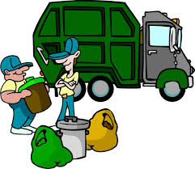
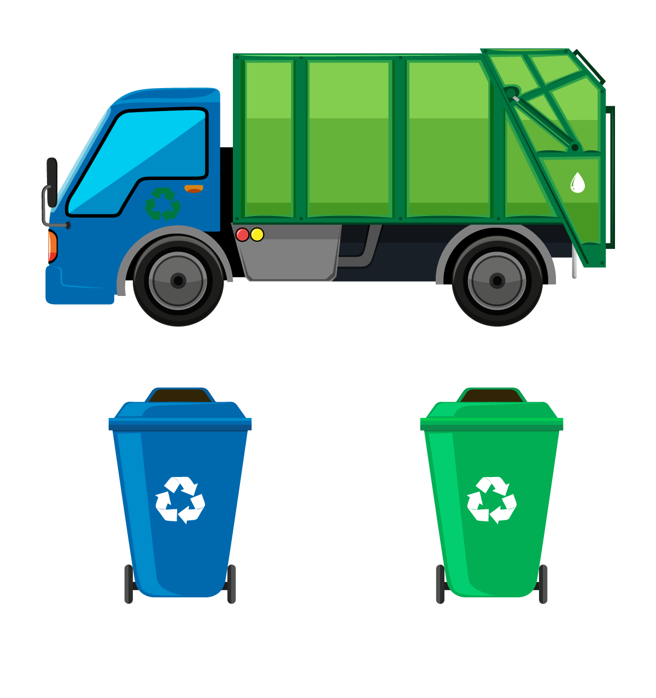
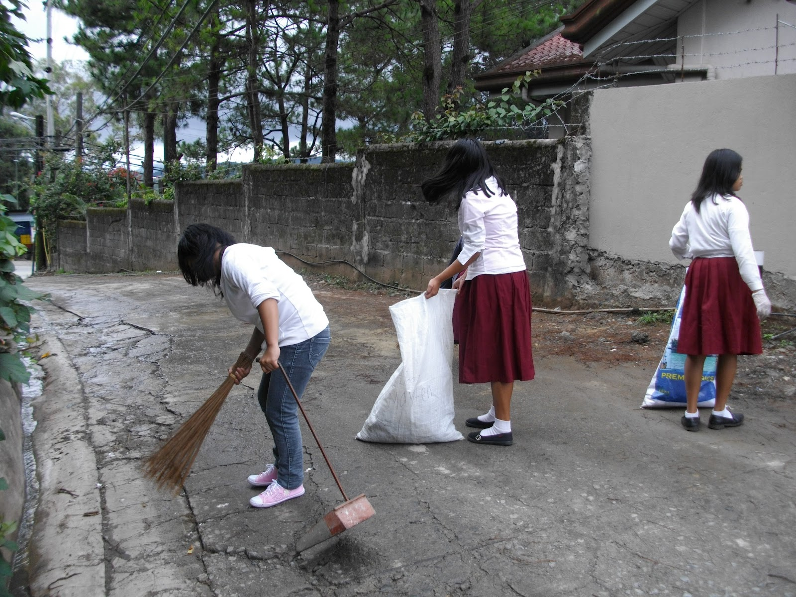
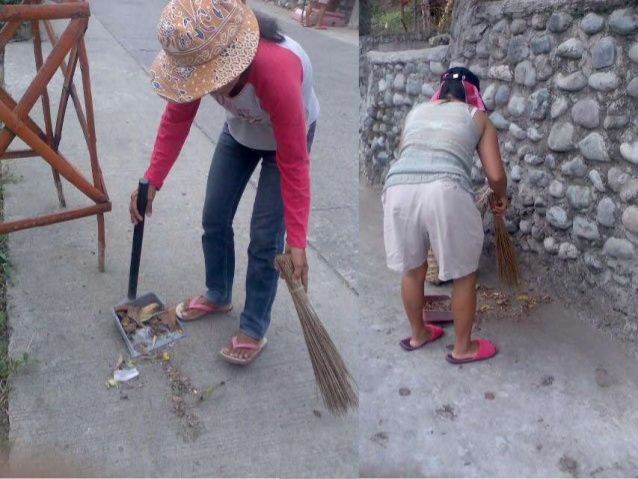

In South Sanitary Camp, residents are strictly advised to bring their trash to their designated trash collection areas every Tuesday, on or before 7:00 A.M. in the morning. There are volunteers manning the designated areas to prevent people from dumping their trash after 7 A.M. This schedule is implemented since the garbage trucks usually arrive before 7:30 and before they do, the trash will be segragated and organized for easier collection.
 The word "sanitary" relates to the conditions that affect hygiene and health. So if you're someone who is not a resident of Sanitary Camp, you'd expect the barangay to be very clean and that couldn't be far from the truth. The people of South Sanitary Camp are expected to clean after themselves. Residents are expected to clean around the premises of their households to maintain the cleanliness of the community. Although people don't get fined when they don't clean their area, everyone in the community cooperates in keeping the barangay clean.
 